Row 1
온실 유형별 광투과량 분석 |

|
|
|
시설원예연구소 |
연구의 목적
- 온실 내부로 투과되는 태양광은 식물의 광합성 및 내부 기상 환경에 영향을 미치는 주요한 인자 임
- 온실 내부에 투과되는 광량은 온실구조와 자재, 설치방향 및 피복재의 종류에 따라 영향을 받음
- 온실설계를 할 때 주로 안전성 위주로 설계가 이루어짐
- 현장에서는 온실의 설계의 안전성뿐만 아니라 온실의 방향, 골조율, 피복재의 종류에 따른 광 투과 특성을 고려한 설계를 요구함
- 따라서 본 연구결과는 온실의 형태 및 피복재의 종류에 따른 광투과율을 비교분석 함
- 광 투과 특성을 고려한 온실 설계의 기초 자료로의 활용 가능성과 분석방법의 타당성을 알아 보았음
Row 3
재료 및 방법
- 분석기간: 2018-1-1 ~ 2018-12-31
- 측정장소: 함안군 시설원예연구소
(35°14’05.7”N 128°25’34.2”E) - 측정항목:
- 일사량(300 ~ 1100 nanometers),
- 광도(400 ~ 700 nanometers)
- 측정센서:
- 일사량(Lightscout, Spectrum Tech., Inc., 0 ~ 2500 μ㏖/m2/s)
- 광도(WatchDog, Spectrum Tech., Inc., 0 ~ 1500 W/m2)
- 측정간격: 5분
- 온실형태: 총 5동
- 연동 2동(A7, B1, B2)
- 단동 3동(B3, B9, B10)
- 온실방향: 정남북
- 분석항목: 광투과율
- 분석프로그램: RStudio
\[광투과율=내부광/외부광 * 100\]
Fig. 1 측정 온실 치수

|

|

|

|

|
Table 1. 온실 지붕 경사각 및 피복재
| 온실 | A7 | B1 | B2 | B9 | B10 | B3 |
|---|---|---|---|---|---|---|
| 경사각(˚) | 22.5 | 26.6 | 29.7 | 25.2 | 25.2 | 30.7 |
| 피복재 | 유리 | PO | PO | PO | 직조 | PE |
| 두께(mm) | 4 | 0.1 | 0.1 | 0.1 | 0.2 | 0.1 |
결과
Fig. 2. 온실 형태별 월별 광투과율 (일출 ~ 일몰)
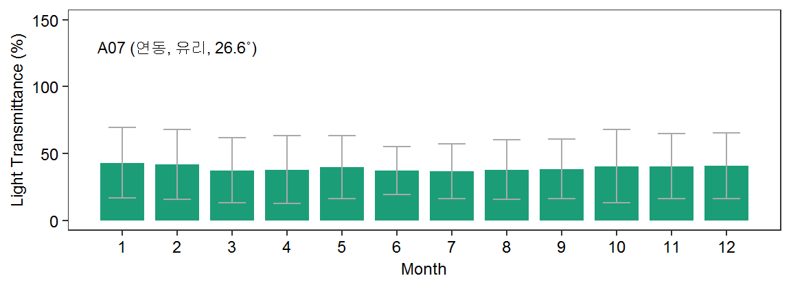
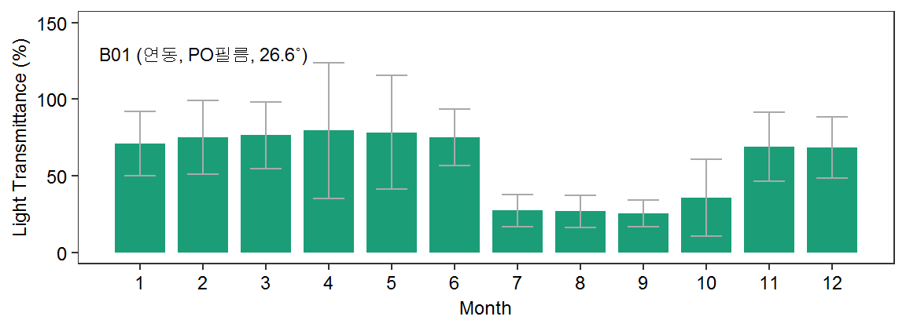
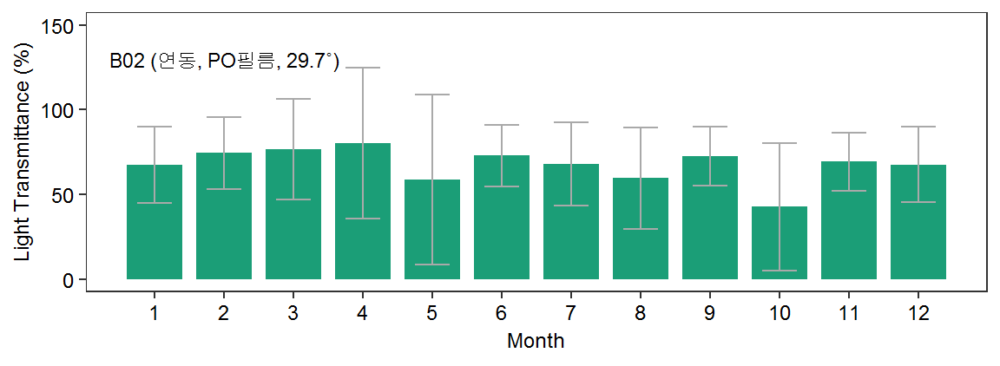
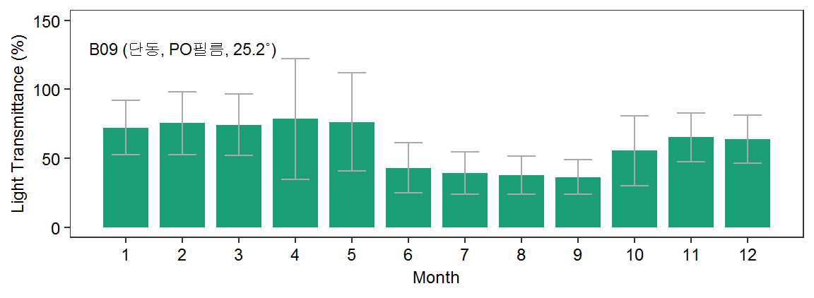
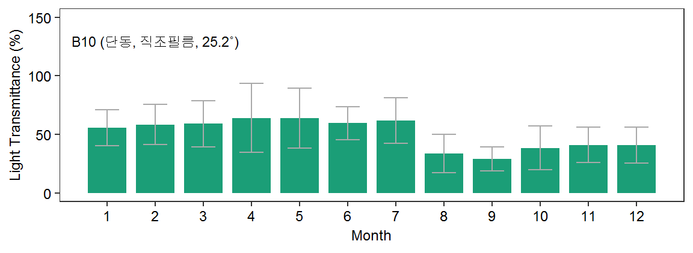
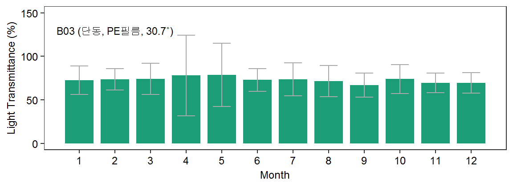
Table 2. 온실 형태별 동절기 광투과율 (일출 ~ 일몰)
| 온실 | A7 | B1 | B2 | B9 | B10 | B3 |
|---|---|---|---|---|---|---|
| 12월(%) | 40.8 | 68.5 | 67.6 | 63.9 | 40.7 | 69.5 |
| 01월(%) | 43.0 | 70.9 | 67.3 | 72.2 | 55.7 | 72.5 |
| 02월(%) | 41.8 | 75.2 | 74.4 | 75.6 | 58.4 | 73.5 |
결과
Fig. 3. 온실 형태별 광투과율 (일출 ~ 오전 12시)
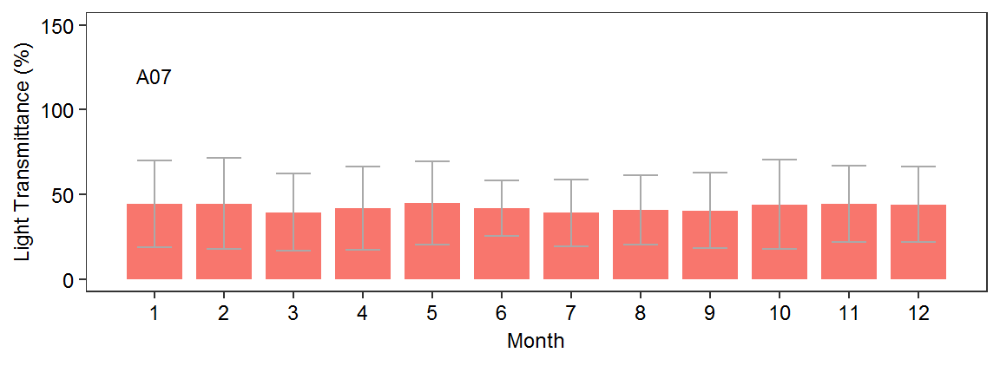
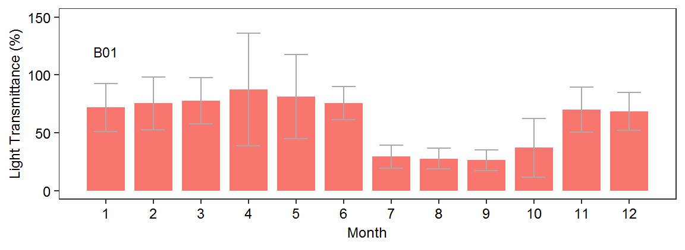
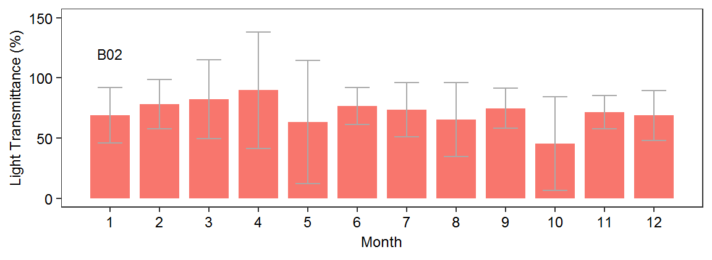
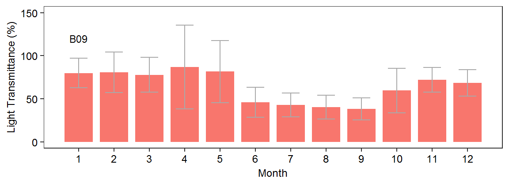
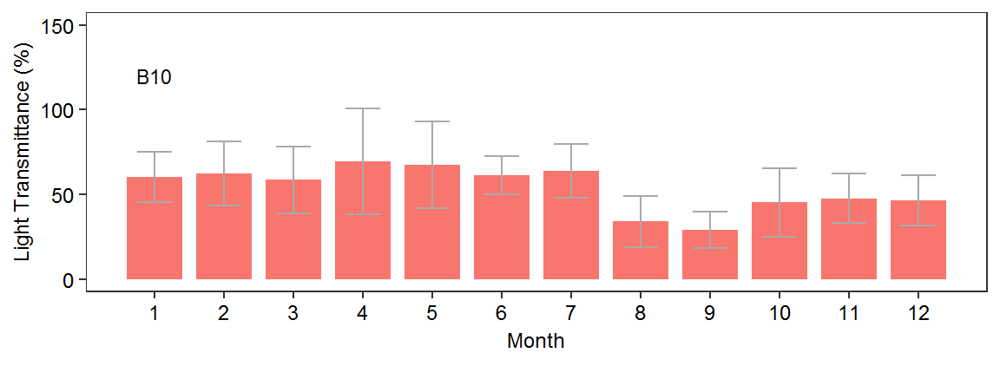
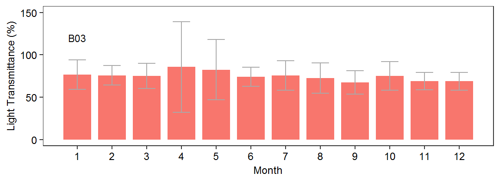
Table 3. 온실 형태별 동절기 광투과율 (일출 ~ 오전 12시)
| 온실 | A7 | B1 | B2 | B9 | B10 | B3 |
|---|---|---|---|---|---|---|
| 12월(%) | 44.4 | 68.6 | 68.8 | 68.5 | 46.5 | 68.9 |
| 01월(%) | 44.5 | 71.9 | 69.0 | 79.9 | 60.1 | 76.7 |
| 02월(%) | 44.5 | 75.5 | 78.3 | 81.0 | 62.4 | 75.7 |
Row 4
결과
Fig. 4. 연동온실 구조형태에 따른 광투과율 비교
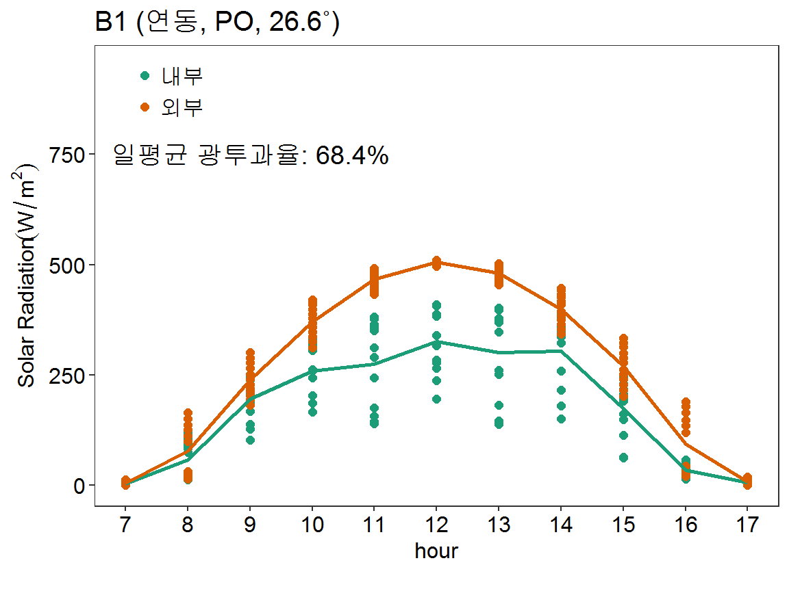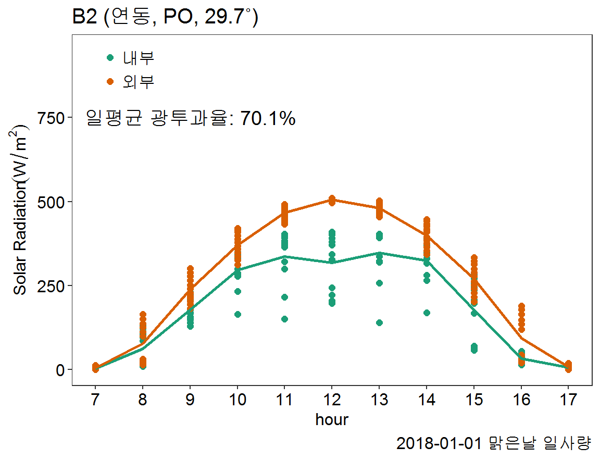
결론
- 본 연구는 온실의 형태와 피복재의 종류에 따른 광투과량을 비교 분석하였음
- 광투과율은 1중 피복(PO)인 연동보다 1중 피복(PO)의 단동이 높게 나타남
- 피복재별로는 PO필름(B1, B2, B9)이 직조필름(B10) 보다 높았음
- 단동온실의 1중과 2중 피복 내부의 광투과율을 비교해 보면, B9의 2중 피복(PO) 내부의 광투과율은 1중(PO)보다 약 18 ~ 25% 포인트 감소하였고 B10의 2중(PE필름)은 약 50% 포인트 이상 감소하였음
- B1과 B2 온실의 광투과율을 비교한 결과 온실 구조에 따른 차이는 2% 내외로 분석됨
- 기본 측정간격 자료에 의한 누적광량 비교, 작물재배 구간별 시뮬레이션 등 분석결과의 신뢰성을 높이기 위한 후속연구가 필요함
---
title: "2019년 춘계 생물환경조절학회 학술대회"
output:
flexdashboard::flex_dashboard:
self_contained: false
orientation: rows
source: embed
social: menu
---
```{r setup, include=FALSE}
library(flexdashboard)
library(ggplot2)
library(lubridate)
library(dplyr)
library(readr)
library(gridExtra)
library(tidyr)
# Setup knitr
knitr::opts_chunk$set(echo = FALSE, message = FALSE, warning = FALSE)
df<- read_csv("D:/1. 연구과제 관련/3. 비닐하우스 구조 자재 설계 및 성능 평가(2017 ~ 2019)/2. SRD & PAR Data/watchdog/20170601 ~ STR & PAR_int_5min.csv")
df1<- mutate(df,
Date_time=as.POSIXct(Date_Time),
year=year(Date_time),
month=month(Date_time),
day=day(Date_time),
hour=hour(Date_time),
minute=minute(Date_time),
b01th=(B1_TH_SRD/OUT_SRD)*100,
b02th=(B2_TH_SRD/OUT_SRD)*100,
a07th=(A7_TH_SRD/OUT_SRD)*100,
b01ch=(B1_CH_SRD/OUT_SRD)*100,
b02ch=(B2_CH_SRD/OUT_SRD)*100,
b02cl=(B2_CL_SRD/OUT_SRD)*100,
a07ch=(A7_CH_SRD/OUT_SRD)*100,
b031L=(B3_CH1L_SRD/OUT_SRD)*100,
b091L=(B9_CH1L_SRD/OUT_SRD)*100,
b101L=(B10_CH1L_SRD/OUT_SRD)*100,
b092L=(B9_CH2L_SRD/OUT_SRD)*100,
b102L=(B10_CH2L_SRD/OUT_SRD)*100)%>%
filter("2018-01-01 07:30:00"<=Date_time & "2018-12-31 17:25:00">=Date_time )%>%
select(Date_time, B1_TH_SRD, OUT_SRD, A7_TH_SRD, b01th:b102L, year, month, day)%>%
mutate_if(is.numeric, list(~na_if(., Inf)))%>%
group_by(year, month)%>%
summarise_at(2:14, funs(mean, sd), na.rm=T)
theme<- theme(panel.grid = element_blank(),
plot.title = element_text(size=9),
plot.caption = element_text(size=7),
axis.text = element_text(size = 9, colour = "black"),
axis.title = element_text(size=9),
legend.text = element_text(size=9),
legend.title = element_blank(),
legend.position = c(0.18, 0.9))
```
## Row 1 {data-height=17}
###
**온실 유형별 광투과량 분석**
류희룡·최만권·조명환·유인호·김승유
시설원예연구소
**연구의 목적**
* 온실 내부로 투과되는 태양광은 식물의 광합성 및 내부 기상 환경에 영향을 미치는 주요한 인자 임
* 온실 내부에 투과되는 광량은 온실구조와 자재, 설치방향 및 피복재의 종류에 따라 영향을 받음
* 온실설계를 할 때 주로 안전성 위주로 설계가 이루어짐
* 현장에서는 온실의 설계의 안전성뿐만 아니라 온실의 방향, 골조율, 피복재의 종류에 따른 광 투과 특성을 고려한 설계를 요구함
* 따라서 본 연구결과는 온실의 형태 및 피복재의 종류에 따른 광투과율을 비교분석 함
* 광 투과 특성을 고려한 온실 설계의 기초 자료로의 활용 가능성과 분석방법의 타당성을 알아 보았음
## Row 3 {data-height=74}
### **재료 및 방법**
* 분석기간: 2018-1-1 ~ 2018-12-31
* 측정장소: 함안군 시설원예연구소
(35°14’05.7”N 128°25’34.2”E)
* 측정항목:
+ 일사량(300 ~ 1100 nanometers),
+ 광도(400 ~ 700 nanometers)
* 측정센서:
+ 일사량(Lightscout, Spectrum Tech., Inc., 0 ~ 2500 μ㏖/m^2^/s)
+ 광도(WatchDog, Spectrum Tech., Inc., 0 ~ 1500 W/m^2^)
* 측정간격: 5분
* 온실형태: 총 5동
+ 연동 2동(A7, B1, B2)
+ 단동 3동(B3, B9, B10)
* 온실방향: 정남북
* 분석항목: 광투과율
* 분석프로그램: RStudio
$$광투과율=내부광/외부광 * 100$$
**Fig. 1 측정 온실 치수**
B1 B2
B9 B10
B3
**Table 1. 온실 지붕 경사각 및 피복재**
|온실|A7|B1|B2|B9|B10|B3|
|---:|:-:|:-:|:-:|:-:|:-:|:-:|
|경사각(˚)|22.5|26.6|29.7|25.2|25.2|30.7|
|피복재|유리|PO|PO|PO|직조|PE|
|두께(mm)|4|0.1|0.1|0.1|0.2|0.1|
### **결과**
**Fig. 2. 온실 형태별 월별 광투과율 (일출 ~ 일몰)**
####
```{r echo=FALSE, out.width = "100%", fig.height=2.2, fig.align='center'}
A7<- ggplot(df1, aes(month, a07th_mean, fill=factor(year)))+geom_bar(stat="identity", position = "dodge", width=0.8, show.legend = F)+
geom_errorbar(aes(ymin=a07th_mean-a07th_sd, ymax=a07th_mean+a07th_sd), position = "dodge", width=0.5, col="darkgray")+
scale_x_continuous(breaks=c(1:12))+
xlab("Month")+ylab("Light Transmittance (%)")+
theme_bw()+
annotate("text", x=2, y=130, size=3, label= "A01 (연동, 유리, 26.6˚)")+
ylim(0,150)+
scale_fill_brewer(palette ="Dark2")+
theme
A7
```
####
```{r echo=FALSE, out.width = "100%", fig.height=2.2, fig.align='center'}
B1<- ggplot(df1, aes(month, b01th_mean, fill=factor(year)))+geom_bar(stat="identity", position = "dodge", width=0.8, show.legend = F)+
geom_errorbar(aes(ymin=b01th_mean-b01th_sd, ymax=b01th_mean+b01th_sd), position = "dodge", width=0.5, col="darkgray")+
scale_x_continuous(breaks=c(1:12))+
xlab("Month")+ylab("Light Transmittance (%)")+
theme_bw()+
annotate("text", x=2, y=130, size=3, label= "B01 (연동, PO필름, 26.6˚)")+
ylim(0,150)+
scale_fill_brewer(palette ="Dark2")+
theme
B1
```
####
```{r echo=FALSE, out.width = "100%", fig.height=2.2, fig.align='center'}
B2<- ggplot(df1, aes(month, b02th_mean, fill=factor(year)))+geom_bar(stat="identity", position = "dodge", width=0.8, show.legend = F)+
geom_errorbar(aes(ymin=b02th_mean-b02th_sd, ymax=b02th_mean+b02th_sd), position = "dodge", width=0.5, col="darkgray")+
scale_x_continuous(breaks=c(1:12))+
xlab("Month")+ylab("Light Transmittance (%)")+
theme_bw()+
theme_bw()+
annotate("text", x=2, y=130, size=3, label= "B02 (연동, PO필름, 29.7˚)")+
ylim(0,150)+
scale_fill_brewer(palette ="Dark2")+
theme
B2
```
####
```{r echo=FALSE, out.width = "100%", fig.height=2.2, fig.align='center'}
B9<- ggplot(df1, aes(month, b091L_mean, fill=factor(year)))+geom_bar(stat="identity", position = "dodge", width=0.8, show.legend = F)+
geom_errorbar(aes(ymin=b091L_mean-b091L_sd, ymax=b091L_mean+b091L_sd), position = "dodge", width=0.5, col="darkgray")+
scale_x_continuous(breaks=c(1:12))+
xlab("Month")+ylab("Light Transmittance (%)")+
theme_bw()+
annotate("text", x=2, y=130, size=3, label= "B09 (단동, PO필름, 25.2˚)")+
ylim(0,150)+
scale_fill_brewer(palette ="Dark2")+
theme
B9
```
####
```{r echo=FALSE, out.width = "100%", fig.height=2.2, fig.align='center'}
B10<- ggplot(df1, aes(month, b101L_mean, fill=factor(year)))+geom_bar(stat="identity", position = "dodge", width=0.8, show.legend = F)+
geom_errorbar(aes(ymin=b101L_mean-b101L_sd, ymax=b101L_mean+b101L_sd), position = "dodge", width=0.5, col="darkgray")+
scale_x_continuous(breaks=c(1:12))+
xlab("Month")+ylab("Light Transmittance (%)")+
theme_bw()+
annotate("text", x=2, y=130, size=3, label= "B10 (단동, 직조필름, 25.2˚)")+
ylim(0,150)+
scale_fill_brewer(palette ="Dark2")+
theme
B10
```
####
```{r echo=FALSE, out.width = "100%", fig.height=2.2, fig.align='center'}
B03<- ggplot(df1, aes(month, b031L_mean, fill=factor(year)))+geom_bar(stat="identity", position = "dodge", width=0.8, show.legend = F)+
geom_errorbar(aes(ymin=b031L_mean-b031L_sd, ymax=b031L_mean+b031L_sd), position = "dodge", width=0.5, col="darkgray")+
scale_x_continuous(breaks=c(1:12))+
xlab("Month")+ylab("Light Transmittance (%)")+
theme_bw()+
annotate("text", x=2, y=130, size=3, label= "B03 (단동, PE필름, 30.7˚)")+
ylim(0,150)+
scale_fill_brewer(palette ="Dark2")+
theme
B03
```
**Table 2. 온실 형태별 동절기 광투과율 (일출 ~ 일몰)**
|온실|A7|B1|B2|B9|B10|B3|
|---:|:-:|:-:|:-:|:-:|:-:|:-:|
|12월(%)|40.8|68.5|67.6|63.9|40.7|69.5|
|01월(%)|43.0|70.9|67.3|72.2|55.7|72.5|
|02월(%)|41.8|75.2|74.4|75.6|58.4|73.5|
### **결과**
**Fig. 3. 온실 형태별 광투과율 (일출 ~ 오전 12시)**
####
```{r echo=FALSE, out.width = "100%", fig.height=2.2, fig.align='center'}
df12<- mutate(df,
Date_time=as.POSIXct(Date_Time),
year=year(Date_time),
month=month(Date_time),
day=day(Date_time),
hour=hour(Date_time),
minute=minute(Date_time),
b01th=(B1_TH_SRD/OUT_SRD)*100,
b02th=(B2_TH_SRD/OUT_SRD)*100,
a07th=(A7_TH_SRD/OUT_SRD)*100,
b01ch=(B1_CH_SRD/OUT_SRD)*100,
b02ch=(B2_CH_SRD/OUT_SRD)*100,
b02cl=(B2_CL_SRD/OUT_SRD)*100,
a07ch=(A7_CH_SRD/OUT_SRD)*100,
b031L=(B3_CH1L_SRD/OUT_SRD)*100,
b091L=(B9_CH1L_SRD/OUT_SRD)*100,
b101L=(B10_CH1L_SRD/OUT_SRD)*100,
b092L=(B9_CH2L_SRD/OUT_SRD)*100,
b102L=(B10_CH2L_SRD/OUT_SRD)*100)%>%
filter("2018-01-01 07:30:00"<=Date_time & "2018-12-31 17:25:00">=Date_time )%>%
filter(hour==6|hour==7|hour==8|hour==9|hour==10|hour==11|hour==12)%>%
select(Date_time, b01th:b102L, year, month, day)%>%
mutate_if(is.numeric, list(~na_if(., Inf)))%>%
group_by(year, month)%>%
summarise_at(2:14, funs(mean, sd), na.rm=T)
a7<- ggplot(df12, aes(month, a07th_mean, fill=factor(year)))+geom_bar(stat="identity", position = "dodge", width=0.8,show.legend = F)+
geom_errorbar(aes(ymin=a07th_mean-a07th_sd, ymax=a07th_mean+a07th_sd), position = "dodge", width=0.5, col="darkgray")+
scale_x_continuous(breaks=c(1:12))+
xlab("Month")+ylab("Light Transmittance (%)")+
theme_bw()+
annotate("text", x=1, y=120, size=3, label= "A07")+
ylim(0,150)+
theme
a7
```
####
```{r echo=FALSE, out.width = "100%", fig.height=2.2, fig.align='center'}
b1<- ggplot(df12, aes(month, b01th_mean, fill=factor(year)))+geom_bar(stat="identity", position = "dodge", width=0.8,show.legend = F)+
geom_errorbar(aes(ymin=b01th_mean-b01th_sd, ymax=b01th_mean+b01th_sd), position = "dodge", width=0.5, col="darkgray")+
scale_x_continuous(breaks=c(1:12))+
xlab("Month")+ylab("Light Transmittance (%)")+
theme_bw()+
annotate("text", x=1, y=120, size=3, label= "B01")+
ylim(0,150)+
theme
b1
```
####
```{r echo=FALSE, out.width = "100%", fig.height=2.2, fig.align='center'}
b2<- ggplot(df12, aes(month, b02th_mean, fill=factor(year)))+geom_bar(stat="identity", position = "dodge", width=0.8,show.legend = F)+
geom_errorbar(aes(ymin=b02th_mean-b02th_sd, ymax=b02th_mean+b02th_sd), position = "dodge", width=0.5, col="darkgray")+
scale_x_continuous(breaks=c(1:12))+
xlab("Month")+ylab("Light Transmittance (%)")+
theme_bw()+
annotate("text", x=1, y=120, size=3, label= "B02")+
ylim(0,150)+
theme
b2
```
####
```{r echo=FALSE, out.width = "100%", fig.height=2.2, fig.align='center'}
b9<- ggplot(df12, aes(month, b091L_mean, fill=factor(year)))+geom_bar(stat="identity", position = "dodge", width=0.8,show.legend = F)+
geom_errorbar(aes(ymin=b091L_mean-b091L_sd, ymax=b091L_mean+b091L_sd), position = "dodge", width=0.5, col="darkgray")+
scale_x_continuous(breaks=c(1:12))+
xlab("Month")+ylab("Light Transmittance (%)")+
theme_bw()+
annotate("text", x=1, y=120, size=3, label= "B09")+
ylim(0,150)+
theme
b9
```
####
```{r echo=FALSE, out.width = "100%", fig.height=2.2, fig.align='center'}
b10<- ggplot(df12, aes(month, b101L_mean, fill=factor(year)))+geom_bar(stat="identity", position = "dodge", width=0.8,show.legend = F)+
geom_errorbar(aes(ymin=b101L_mean-b101L_sd, ymax=b101L_mean+b101L_sd), position = "dodge", width=0.5, col="darkgray")+
scale_x_continuous(breaks=c(1:12))+
xlab("Month")+ylab("Light Transmittance (%)")+
theme_bw()+
annotate("text", x=1, y=120, size=3, label= "B10")+
ylim(0,150)+
theme
b10
```
####
```{r echo=FALSE, out.width = "100%", fig.height=2.2, fig.align='center'}
b3<- ggplot(df12, aes(month, b031L_mean, fill=factor(year)))+geom_bar(stat="identity", position = "dodge", width=0.8,show.legend = F)+
geom_errorbar(aes(ymin=b031L_mean-b031L_sd, ymax=b031L_mean+b031L_sd), position = "dodge", width=0.5, col="darkgray")+
scale_x_continuous(breaks=c(1:12))+
xlab("Month")+ylab("Light Transmittance (%)")+
theme_bw()+
annotate("text", x=1, y=120, size=3, label= "B03")+
ylim(0,150)+
theme
b3
```
**Table 3. 온실 형태별 동절기 광투과율 (일출 ~ 오전 12시)**
|온실|A7|B1|B2|B9|B10|B3|
|---:|:-:|:-:|:-:|:-:|:-:|:-:|
|12월(%)|44.4|68.6|68.8|68.5|46.5|68.9|
|01월(%)|44.5|71.9|69.0|79.9|60.1|76.7|
|02월(%)|44.5|75.5|78.3|81.0|62.4|75.7|
## Row 4 {data-height=20}
### **결과** {data-width=50}
**Fig. 4. 연동온실 구조형태에 따른 광투과율 비교**
```{r echo=FALSE, out.width = "50%", fig.height=4.6, fig.show="hold"}
df_daily<- mutate(df,
Date_time=as.POSIXct(Date_Time),
year=year(Date_time),
month=month(Date_time),
day=day(Date_time),
hour=hour(Date_time),
minute=minute(Date_time))
df_B1<- df_daily%>% select(Date_time, B1_TH_SRD, B1_CH_SRD, B1_TH_PAR, OUT_SRD, OUT_PAR, day, hour)%>% filter("2018-01-01 07:30:00"<=Date_time & "2018-01-01 17:35:00">=Date_time)
df_B2<- df_daily%>% select(Date_time, B2_TH_SRD, B2_CH_SRD, B2_TH_PAR, OUT_SRD, OUT_PAR, day, hour)%>% filter("2018-01-01 07:30:00"<=Date_time & "2018-01-01 17:35:00">=Date_time)
G1<- df_B1 %>%
select(Date_time, B1_TH_SRD, OUT_SRD, day, hour)%>%
gather(type, value, -Date_time, -day, -hour)%>%
ggplot(aes(x=hour, y=value, col=type))+geom_point(size=2)+
#stat_summary(fun.y = mean, geom = "point", size=3, aes(shape=type))+
#stat_summary(fun.y = mean, geom = "text", size=4, show.legend=F, hjust = 1.3, vjust = 0.5, aes(label=sprintf("%1.1f",..y..)))+
stat_summary(fun.y = mean, geom = "line", size=1, show.legend=F, aes(col=type))+
#stat_summary(fun.data ="mean_se", geom = "errorbar", width=0.5)+
scale_color_brewer(palette ="Dark2",labels=c("내부", "외부"))+
scale_shape_discrete(labels=c("피복교체 전 (2017-10-10)", "피복교체 후 (2018-10-10)"))+
annotate("text", x=9, y=750, size=5, label= "일평균 광투과율: 68.4%")+
#annotate("text", x=8, y=750, size=3, label= "일평균 투과율: 68.1% (후)")+
theme_bw()+
scale_x_continuous(breaks = seq(6, 17, 1))+
labs(x="hour",
y=expression(paste("Solar Radiation" (W/m^{2}))))+
ylim(0,950)+
labs(title = "B1 (연동, PO, 26.6˚)",
caption="")+
theme(panel.grid = element_blank(),
plot.title = element_text(size=15),
plot.caption = element_text(size=12),
axis.text = element_text(size = 12, colour = "black"),
axis.title = element_text(size=12),
legend.text = element_text(size=12),
legend.title = element_blank(),
legend.position = c(0.1, 0.9))
G1
G2<- df_B2 %>%
select(Date_time, B2_TH_SRD, OUT_SRD, day, hour)%>%
gather(type, value, -Date_time, -day, -hour)%>%
ggplot(aes(x=hour, y=value, col=type))+geom_point(size=2)+
#stat_summary(fun.y = mean, geom = "point", size=3, aes(shape=type))+
#stat_summary(fun.y = mean, geom = "text", size=4, show.legend=F, hjust = 1.3, vjust = 0.5, aes(label=sprintf("%1.1f",..y..)))+
stat_summary(fun.y = mean, geom = "line", size=1, show.legend=F, aes(col=type))+
#stat_summary(fun.data ="mean_se", geom = "errorbar", width=0.5)+
scale_color_brewer(palette ="Dark2",labels=c("내부", "외부"))+
scale_shape_discrete(labels=c("피복교체 전 (2017-10-10)", "피복교체 후 (2018-10-10)"))+
annotate("text", x=9, y=750, size=5, label= "일평균 광투과율: 70.1%")+
#annotate("text", x=8, y=750, size=3, label= "일평균 투과율: 68.1% (후)")+
theme_bw()+
scale_x_continuous(breaks = seq(6, 17, 1))+
labs(x="hour",
y=expression(paste("Solar Radiation" (W/m^{2}))))+
ylim(0,950)+
labs(title = "B2 (연동, PO, 29.7˚)",
caption="2018-01-01 맑은날 일사량")+
theme(panel.grid = element_blank(),
plot.title = element_text(size=15),
plot.caption = element_text(size=12),
axis.text = element_text(size = 12, colour = "black"),
axis.title = element_text(size=12),
legend.text = element_text(size=12),
legend.title = element_blank(),
legend.position = c(0.1, 0.9))
G2
```
### **결론**{data-width=45}
* 본 연구는 온실의 형태와 피복재의 종류에 따른 광투과량을 비교 분석하였음
* 광투과율은 1중 피복(PO)인 연동보다 1중 피복(PO)의 단동이 높게 나타남
* 피복재별로는 PO필름(B1, B2, B9)이 직조필름(B10) 보다 높았음
* 단동온실의 1중과 2중 피복 내부의 광투과율을 비교해 보면, B9의 2중 피복(PO) 내부의 광투과율은 1중(PO)보다 약 18 ~ 25% 포인트 감소하였고 B10의 2중(PE필름)은 약 50% 포인트 이상 감소하였음
* B1과 B2 온실의 광투과율을 비교한 결과 온실 구조에 따른 차이는 2% 내외로 분석됨
* 기본 측정간격 자료에 의한 누적광량 비교, 작물재배 구간별 시뮬레이션 등 분석결과의 신뢰성을 높이기 위한 후속연구가 필요함